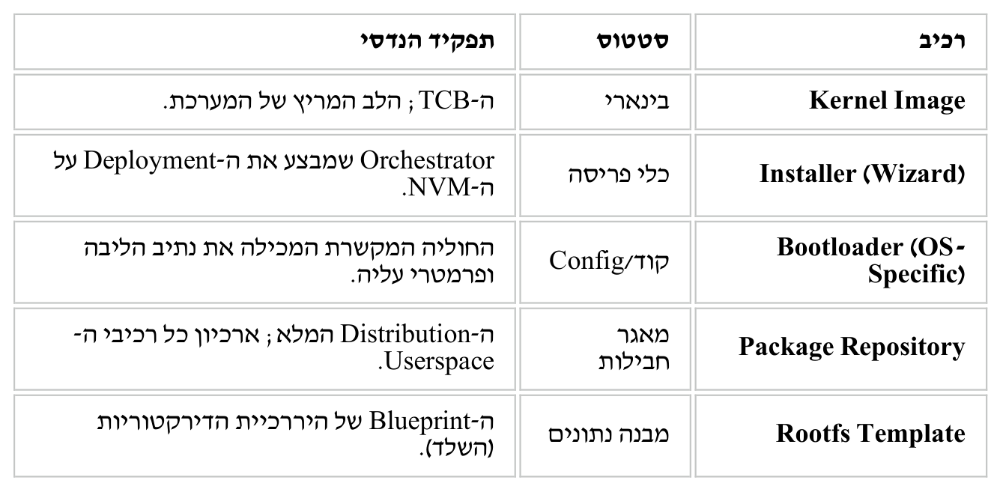

מסלול החיים של המערכת — מתכנון ועד הרצה
⏱ זמן משוער: 35 דק'
0. נקודת הפתיחה — קוד ענק, אחריות ענקית
קוד הקרנל הוא huge & extremely complex — עשרות מיליוני שורות (טבלאות במודול הקודם), כי הוא "המתווך הקריטי" (critical intermediary) בין החומרה לאפליקציות ומספק במקביל:
- ניהול זיכרון פיזי ווירטואלי; תזמון תהליכים ו-threads;
- טיפול בפעולות I/O; אכיפת מדיניות אבטחה;
- הפשטת מערכות קבצים; פרוטוקולי רשת ואספקת system-level APIs — ועוד.
הטענה המרכזית: חובה לממש קרנל מודרני בגישה מתודית ומובנית לפי ה-SDLC (Software Development Life Cycle) — מסיבות טכניות, ניהוליות ופרקטיות.
0.1 מפת השיעור — המסלול שנעבור
מסלול אחד רציף, מההחלטה שצריך מערכת הפעלה ועד למשתמש שמקליד פקודה: הצדקות ל-SDLC (1) ← דרישות (2) ← עיצוב ומבנה (3–4) ← הפצה (5) ← משתמשים (6).
מקור: Kernel-SDLC.pdf (עמ' 2–8)
1. למה SDLC? תשע ההצדקות
1.1 מה זה בכלל SDLC
SDLC אינו תוכנה אלא שיטת עבודה: חלוקת הפרויקט לשלבים, שכל אחד מסתיים בתוצר מוגדר. שלבי המצגת:
| השלב (כלשון המצגת) | מה קורה בו | איפה בשיעור |
|---|---|---|
| Requirements | מה המערכת צריכה לעשות ובשביל מי | סעיף 2 |
| Design | איך תיבנה — יעדים, ארכיטקטורה, חלוקה לרכיבים | סעיפים 3–4 |
| Implementation | כותבים את הקוד בפועל | רוב הקורס מכאן והלאה |
| Testing | verification & validation מול הדרישות | שיקול לשחרור הפצה, סעיף 5 |
| Deployment | אריזת ההפצה והתקנתה על מחשב היעד | סעיף 5 |
| Maintenance | תחזוקה, תיקונים ועדכונים לאורך שנים | הצדקה 7 ו-LTS |
1.2 תשע ההצדקות (Justifications)
שקף לכל הצדקה. יש לדעת לזהות הצדקה מתוך תיאור שלה:
- High System Complexity Necessitates Structured Planning — אד-הוק = Architectural inconsistencies, Integration failures והפרת דרישות לא-פונקציונליות.
- Reliability and Stability Requirements — כשל בקרנל מתדרדר (cascade) לקריסות ואובדן נתונים; לכן design reviews, code audits ובדיקות יחידה/אינטגרציה/מערכת.
- Safety and Security Constraints — יעד ל-malware, ולכן אבטחה כבר בדרישות ובעיצוב: threat modeling, secure design patterns, code hardening (Security Development Lifecycle).
- Scalability and Extensibility Needs — חומרה ופרדיגמות חדשות (וירטואליזציה, קונטיינרים) דורשות מודולריות וממשקים נקיים (APIs, kernel modules).
- Team Collaboration and Project Management — אלפי תורמים חוצי-תחומים (קרנל, UI/UX, QA, תיעוד): version control, אבני-דרך וסטנדרטים.
- Cost and Time Efficiency — נגד גילוי מאוחר של פגמים וחריגות זמנים: requirement traceability, Agile/Spiral וניהול סיכונים.
- Maintainability and Lifecycle Support — מחזור חיים של עשרות שנים (UNIX כבר מעל 50 שנה) דורש מודולריות, תקני קוד, תיעוד ובקרת שינויים.
- Legal and Regulatory Compliance — תקנים בתחומים מפוקחים: ISO/IEC 12207 (מחזור חיי תוכנה), DO-178C (תעופה), IEC 62304 (תוכנה רפואית).
- User and Developer Experience — ממשקים עקביים, APIs ותיעוד ברור, וטיפול חסין בשגיאות.
1.3 ציר הזמן של ה-SDLC כפי שצויר על הלוח
🎓 מהשיעור בכיתה (מהמחברת)
המרצה מתח על הלוח ציר זמן אחד — אותם ששת שלבי ה-SDLC בשמות שהשתמש בהם בכיתה — מהדרישות ועד החבילה שמתקינים על מחשב:
SRS → HLD → LLD → coding + unit testing → Extensive Validation → dist. manager → dist. package
- SRS — מסמך הדרישות (סעיף 2), נקודת הפתיחה של הציר.
- HLD (High Level Design) — חלוקה לרכיבים ולממשקים ביניהם.
- LLD (Low Level Design) — התכן הפנימי של כל רכיב; ממנו נגזרת רשימת המשימות (task list) שהמפתחים מקבלים.
- קידוד + unit testing.
- Extensive Validation — אימות נרחב, וכחלק ממנו stress analysis (התנהגות תחת עומס קיצוני).
- dist. manager — מי שאורז את התוצר, ומוציא בסופו dist. package: חבילת ההפצה (סעיף 5).
מקור: Kernel-SDLC.pdf (עמ' 9–19)
2. שלב הדרישות — מבעלי העניין ועד רשימת קריאות המערכת
2.1 מי מבקש, ומה בדיוק
השלב הראשון: איסוף, ניתוח וגיבוש דרישות. "בעל עניין" (stakeholder) = מי שהמערכת נוגעת לו ושצרכיו חייבים להישמע.
- בעלי העניין: מפתחי קרנל, מנהלי Distribution, מתכנתי Application-level ומפעילי שרתים.
- דרישות פונקציונליות (מה המערכת עושה) — למשל מערכת קבצים או פרוטוקול רשת. כל דרישה חייבת להשתייך לבעל עניין אחד לפחות; אין דרישה "יתומה".
- דרישות לא-פונקציונליות (כמה טוב) — קריטיות לקרנל: Latency של Interrupts, עמידות ב-Load גבוה, ואיכות ה-Security.
- התוצר: מסמך ה-SRS (Software Requirements Specification) — ה-Blueprint המוסכם על הקהילה, התוצר הרשמי של השלב.
2.2 גיבוש רשימת קריאות המערכת
אילו קריאות מערכת הקרנל מספק — זו החלטת דרישות, לא מימוש: הרשימה היא הממשק היחיד שדרכו כל תוכנה תדבר עם הקרנל.
- גרסה 1.0: קריאות מערכת "בהשראת Unix".
- הגרסאות הבאות: חובה לשמור תאימות לאחור (backward compatibility).
- הרשימה הנתמכת בגרסה 6.14: filippo.io/linux-syscall-table.
שש הקטגוריות, ה-API של read() ותפקיד ה-wrapper של glibc — במודול 3.
2.3 שתי דרישות שהמרצה פירט בכיתה — multiprogramming ו-multi-user
🎓 מהשיעור בכיתה (מהמחברת)
שתי דרישות-על שמעצבות את כל הקרנל. הראשונה, multiprogramming (ריבוי משימות), ומיד אזהרה שכתב במפורש:
multiprogramming ≠ task
task = משימה אחת שהקרנל מנהל; multiprogramming = תכונת המערכת להריץ הרבה כאלה יחד. שלוש התכונות שרשם:
- N משימות במערכת "במקביל";
- כל task מקבל חלק מה-MM (הזיכרון הראשי) — לא את כולו;
- המתנה ל-I/O (למשל קריאה מדיסק) מעבירה את המעבד למשימה אחרת, במקום לעמוד בטל.
התכונה השלישית היא ההצדקה למתזמן (Scheduler): זמן ההמתנה ל-I/O ארוך מאוד ביחס למעבד, ולכן "לחלק" אותו בין המשימות הוא הרווח הגדול. הדרישה השנייה: multi-user — כמה משתמשים על אותה מערכת, ומכאן חשבונות המשתמשים שבסעיף 6.
על ציר זמן היסטורי סימן המרצה את שנת 1991 והשווה שתי מערכות:
| UNIX | DOS | |
|---|---|---|
| multiprogramming | יש | אין |
| Security | יש | אין |
| מודל השימוש | רב-משתמשים: מחשב מרכזי אחד (CPU ו-MM משותפים) שאליו מחוברים כמה מסופים (terminals) | מחשב אישי, משתמש אחד, תוכנית אחת בכל רגע |
לכן הן נכתבות ב-SRS: מערכת שלא תוכננה מראש לריבוי משימות ומשתמשים לא תדע לעשות זאת אחר כך.
מקור: Kernel-SDLC.pdf (עמ' 20–22)
3. שמונה יעדי העיצוב של Linux
שלב ה-Design. ל-Linux — מערכת הפעלה open-source דמוית-Unix — שמונה יעדים מנחים, וכל אחד עם המנגנונים שמממשים אותו (יש להכיר גם אותם):
1 · Performance and Efficiency
Kernel Optimization — תזמון, זיכרון ו-I/O יעילים; Modularity — רק רכיבים נחוצים; Scalability — מ-embedded ועד supercomputers.
2 · Security
הרשאות משתמשים וקבוצות (סעיף 6); Security Modules — SELinux עם MAC; עדכונים שוטפים; Isolation — namespaces ו-cgroups.
3 · Stability and Reliability
Robust Kernel — עומסים גבוהים ו-uptime; LTS (Long-Term Support) — תחזוקה מורחבת לשנים; Testing and Validation — בדיקות קהילתיות ואוטומטיות.
4 · Flexibility and Customization
Open Source — ניתן לשינוי; Configurable Kernel — קומפילציה עם הפיצ'רים והדרייברים הנחוצים בלבד; Diverse Distributions — דסקטופ/שרת/embedded.
5 · Portability
Architecture Support — x86, ARM, PowerPC; Cross-Compilation — פיתוח מסביבה אחת לחומרה אחרת; Device Drivers — ספרייה עצומה.
6 · Interoperability
POSIX Compliance (Portable Operating System Interface) — תקן הממשק האחיד, ומכאן תאימות למערכות דמויות-Unix; File System Support — ext4, NTFS, FAT32 ועוד; Network Protocols — פרוטוקולים סטנדרטיים.
7 · Community and Collaboration
Open Development — קהילה גלובלית; Transparent Processes — רשימות תפוצה, מעקב באגים וניהול גרסאות פתוחים; Diversity of Contributions — יחידים, אקדמיה ותאגידים.
8 · Minimalism and Elegance
עקרון KISS — "Keep It Simple, Stupid": בלי מורכבות מיותרת; פילוסופיית Unix — רכיבים פשוטים ומודולריים, כל אחד מבצע משימה אחת היטב.
מקור: Kernel-SDLC.pdf (עמ' 26–35)
4. מבנה הקרנל — התרשים המלא ורכיביו
שלב העיצוב מתפצל לשניים: HLD — חלוקת המערכת לרכיבים ולממשקים ביניהם, ו-LLD — התכן הפנימי של כל רכיב. מה-HLD נולד המבנה השכבתי של קרנל Linux.
4.1 התרשים: Structure of Linux Kernel
קוראים מלמעלה למטה, ובצד מסומן שמה של כל שורה:
- Applications and tools — תוכנות המשתמש, ב-user space.
- System calls — שער הכניסה היחיד אל הקרנל; כל החיצים מהאפליקציות עוברים דרך השכבה הזו.
- חמשת רכיבי הקרנל, כל אחד בשלוש שורות: component, Functionality, Software support.
- החומרה למטה, בחיצים דו-כיווניים: הקרנל פונה לחומרה והחומרה מתריעה לקרנל.
![תרשים מבנה קרנל לינוקס מתוך המצגת: למעלה תיבת Applications and tools בשכבת User space, מתחתיה חיצים יורדים דרך הכיתוב System calls אל חמישה טורי רכיבים — Process management (Multitasking, Scheduler / Architecture specific code), Memory management (Virtual memory, Memory manager), File systems (Files, directories, File system types, Block devices), Device drivers (Device access, Character devices) ו-Network (Network functionality, Network protocols, Network drivers); בצד התוויות component, Functionality, Software support, Hardware support ו-Hardware, ולמטה חיצים דו-כיווניים אל CPU, RAM, Hard disk CD floppy, Terminals ו-Network adapter](../assets/pdf-figures/02-system-lifecycle/linux-kernel-structure.png)
הזיווג בשורה התחתונה — כל רכיב קרנל מול רכיב החומרה שמולו: CPU↔Scheduler, RAM↔Memory manager, דיסקים↔Block devices, Terminals↔Character devices, Network adapter↔Network drivers.
4.2 מודולי הקרנל — מה כל רכיב אחראי לו
התרשים מציג חמישה רכיבים; שקפי Kernel's modules [components] מפרטים שמונה תחומי אחריות — שני חתכים של אותו קרנל, לא סתירה.
Process Management
יצירה/מחיקה, suspension/resumption, תקשורת בין תהליכים, וטיפול ב-deadlock.
Main Memory Management
מעקב אחרי סגמנטים תפוסים/פנויים, איזה סגמנט יוקצה לכל תהליך, והקצאה/שחרור זיכרון.
File Management
יצירה/מחיקה של קבצים וספריות, פרימיטיבות למניפולציה, ומיפוי אל secondary storage (דיסק/SSD).
I/O System Management
רכיב ניהול זיכרון עם buffering, caching ו-spooling; ממשק device-driver כללי; ודרייברים ספציפיים.
Secondary-storage Management
free space management, storage allocation, ו-disk scheduling — סדר הגישות לדיסק.
Networking
פרוטוקולי TCP/IP, וגם כאן ניהול זיכרון עם buffering, caching ו-spooling.
Protection System
תהליך פועל רק על מה שהורשה לו; הגנה על מרחב הכתובות מפני תהליכים אחרים.
Error and Faults Handling
זיהוי וטיפול בתקלות; אובדן או בזבוז משאבים; וניצול-יתר — כולל התקפות denial of service.
מקור: Kernel-SDLC.pdf (עמ' 36–41; עמ' 42–44 הם שקפי תבנית ריקים)
5. מהקוד אל העולם — ה-Distribution
קרנל לבדו הוא קובץ אחד שאי אפשר לעשות איתו כלום. ההפצה (Distribution) היא החבילה השלמה — הקרנל יחד עם כל התוכנה שהופכת אותו למערכת שמישה; זהו שלב ה-Deployment.
5.1 איך נוצרת ההפצה — ארבעה שלבי "סינתזה"
1 · Linking & Compilation
כל מרכיבי המערכת, מהקרנל ועד ה-Coreutils, מקומפלים ב-Build Environment — כאן נוצרים ה-Binaries.
2 · Integration
ה"איסוף" (Gathering): ה-Binaries, קובצי ה-Configuration והספריות המשותפות נאספים למבנה דירקטוריות אחד — ה-rootfs.
3 · Packaging
כל רכיב נארז לפורמט חבילה (.deb או .rpm), כולל כתיבת Metadata — התלויות של כל חבילה.
4 · Distribution Mapping
יצירת ה-Repository עם כל החבילות וה-Metadata, כך שה-Package Manager (apt/dnf) יידע להרכיב את המערכת על מחשב היעד.
5.2 מה יש בתוך ההפצה?
ההפצה = "הארכיטקטורה הסטטית" שתיפרס על הדיסק:
- Kernel Image — הבינארי vmlinuz, ה-TCB עצמו;
- מערכת ה-Initialization — systemd או SysVinit, שמעלים את שאר השירותים אחרי הקרנל;
- Shared Libraries (/lib/, /usr/lib/) — glibc וספריות תלויות, ליבת ה-ABI;
- Core Utilities — Bash, ls, cp, grep וכו', הכלים שדרכם המשתמש מבצע System Calls;
- Configuration Files (/etc/) — ה-Blueprint של התנהגות המערכת: משתמשים, הרשאות, רשת;
- Documentation & Manuals;
- תבנית ה-Root Filesystem — היררכיית הדירקטוריות (/bin, /etc, /proc, /sys, /home, /dev);
- ה-Installation Wizard וקוד ה-Bootloader — בסעיף הבא.
אותם רכיבים מזווית הנדסית, בטבלת "תכולת החבילה":

5.3 שני רכיבים שקל לפספס — ה-Installer וה-Bootloader
ה-Installer (Anaconda ב-Fedora/RHEL, Ubiquity ב-Ubuntu) — חלק מההפצה, אבל כלי פריסה (Deployment Tool) שיושב על מדיית ההתקנה ולא רץ ב-runtime. הוא מחליט:
- איך לפרמט את ה-NVM (האחסון הבלתי-נדיף — דיסק/SSD): ה-Partition table;
- אילו חבילות להפריס (Desktop מול Server);
- Post-Installation tasks — ה-Root user, רשת, ורישום הקרנל ל-NVRAM של הלוח (efibootmgr), כדי שיידע מה להריץ בהדלקה הבאה.
ה-Bootloader — הקוד שטוען את הקרנל בעלייה — מורכב משני חלקים:
- Generic Stage (Firmware Interface) — קוד סטנדרטי כמו UEFI bootx64.efi שמפעיל ה-Firmware של הלוח; לא ספציפי למערכת ההפעלה אלא לפורמט ה-NVM.
- OS-Specific Stage — מועתק מההפצה ל-ESP (EFI System Partition) או ל-Boot sector, ומכיל את קונפיגורציית הקרנל: למשל grub.cfg — מיקום ה-Kernel image ופרמטרי העלייה כגון root=/dev/sda1.
ה-Metadata של חבילה = שם, גרסה, ארכיטקטורה (ISA) ורשימת תלויות; מתוכו ה-Package Manager בונה את גרף התלויות שקובע מה מותקן לפני מה.
5.4 סגירת המעגל — ההתקנה בפועל
- המשתמש מפעיל את ה-Installer.
- ה-Installer מכין את ה-NVM ופורס את ה-Rootfs.
- ה-Installer מתקין את ה-Bootloader הספציפי ומגדיר את ה-NVRAM של הלוח.
- המכונה מוכנה לעבור ל-Power-up ולשלב ה-Bootstrap.
5.5 מפת ה-NVM אחרי ההתקנה
🎓 מהשיעור בכיתה (מהמחברת)
בכיתה המרצה הראה שקף שמצייר איך נראה הדיסק (ה-NVM) ברגע שה-Installer סיים. הוא חילק את ה-SSD למחיצות (partitions), וכתב בתחילתו את GPT — בלשונו: Global Partition Table, טבלה שאומרת "מה יש על ה-SSD". זו המפה, משמאל לימין על הדיסק:
| מחיצה | מה יש בה | סדר גודל שנרשם |
|---|---|---|
| GPT | טבלת המחיצות — מה קיים על הדיסק ואיפה כל מחיצה מתחילה | זעיר, בתחילת הדיסק |
| kernel boot loader | הקוד שטוען את הקרנל בעלייה (ה-Bootloader מסעיף 5.3) | — |
| root (ה-rootfs) | מערכת הקבצים הראשית, ובתוכה שני חלקים: I — טבלת ה-Inode-ים (רשומת מידע לכל קובץ) ו-II — בלוקי הנתונים (תוכן הקבצים עצמו) | כ-0.9 TB לכל אזור ה-NVM |
| Home | תיקיות הבית של המשתמשים (סעיף 6) | |
| Swap | שלוחה של הזיכרון על הדיסק — הזיכרון המדומה (virtual memory): כשה-MM מתמלא, דפים "מוגלים" לכאן | כ-100 GB (בשקף נרשם גם "זיכרון מדומה — 64GB+") |
שתי הערות שהמרצה הוסיף בעל פה: INode = Index Node (זה פירוק ראשי התיבות — "רשומת אינדקס" לכל קובץ), ושמתוך ה-rootfs ממשיכים לעץ הספריות המוכר —
/ → bin/ → cp (קובץ הרצה בפורמט ELF)
כלומר: אותה תוכנית cp שנריץ בהמשך הקורס יושבת פיזית כקובץ ELF בתוך /bin, במחיצת ה-root שההתקנה יצרה. את מבנה ה-Inode ובלוקי הנתונים נפרק במודול מערכת הקבצים.
5.6 ציר האתחול — מהדלקת המחשב ועד bash
🎓 מהשיעור בכיתה (מהמחברת)
וכך נראה מה שקורה בהדלקה הבאה, כפי שהמרצה צייר על ציר זמן אחד וצבע אותו בשני צבעים (אדום = המעבד במצב גרעין, כחול = מצב משתמש):
- power up — מדליקים.
- POST — Power-On Self Test: המערכת בודקת את עצמה.
- firmware — הקושחה שצרובה בלוח מוצאת מאיפה לעלות (ומשם מגיעים ל-NVM ולמפה שבסעיף 5.5).
- OS bootloader — טוען את הקרנל לזיכרון.
- login — username + pw: כאן נכנס לתמונה המשתמש מסעיף 6.
- bash — ומכאן והלאה המשתמש מקליד פקודות.
הצביעה היא העיקר: כל התחלת הציר אדומה — המערכת עולה כולה במצב גרעין — ורק מרגע ה-login נפתחים קטעים כחולים, שהם התהליכים של המשתמש. אותו ציר, מזווית מצבי המעבד, מופיע במודול הקודם.
מקור: distr.pdf (עמ' 1–4)
6. ומי מפעיל את כל זה? חשבונות משתמשים
6.1 מה זה חשבון — ולמה חייבים אחד
לינוקס לא מריצה דבר בלי זהות: כדי לעבוד מול המערכת נדרש חשבון (User Account) — פרופיל אבטחה מנוהל שהקרנל מכיר, שמגדיר לאילו קבצים מותר לגשת, אילו תהליכים מותר להריץ ואילו משאבים מוקצים.
6.2 Username מול UID — שתי נקודות מבט
מבחינת המשתמש: Username (מחרוזת, למשל alice) + Password שנשמר כ-Hash מוצפן, לא כטקסט גלוי.
מבחינת הקרנל: מחרוזות אינן קיימות. במבני הליבה — task_struct, struct cred, kuid_t — המשתמש הוא מספר שלם בלבד: UID (User Identifier). התרגום נעשה במרחב המשתמש, לפני קריאת המערכת:
"alice"
Username — מחרוזת, מוכרת רק ב-User Space
getpwnam()
ספריות ה-C קוראות את קובצי התצורה ומתרגמות
UID = 1001
מספר שלם — הייצוג היחיד שהקרנל מכיר
task_struct · struct cred
הזהות מוצמדת לכל תהליך של המשתמש בקרנל
6.3 מי פותח חשבונות, ואיפה הם נשמרים
יצירת חשבון נוגעת בקבצי תצורה רגישים ומקצה תיקיית בית (/home/username), ולכן היא אך ורק בידי ה-root — בפקודה useradd (גם ב-Debian/Ubuntu וגם ב-Red Hat/Fedora) או במעטפת adduser, שמאוטמטת תיקיית בית וסיסמה. הפרטים נשמרים בקבצי טקסט רגילים (ובמבני DBM — אינדקסים בינאריים לחיפוש מהיר) ב-/etc/:
- /etc/passwd — רשימת החשבונות הגלובלית: UID, GID ראשי, שם מלא (GECOS), תיקיית בית ו-Shell;
- /etc/shadow — ה-Hashes של הסיסמאות ומדיניות התפוגה; נגיש אך ורק ל-root.
הרחבה — איך נראית בפועל שורה ב-/etc/passwd
שבעת השדות, מופרדים בנקודתיים:
alice:x:1001:1001:Alice Cohen:/home/alice:/bin/bashלפי הסדר: Username · x (סימן שה-Hash יושב ב-/etc/shadow ולא כאן) · UID · GID של ה-Primary Group · GECOS (שם מלא) · תיקיית בית · מעטפת הפקודה. השורה ממחישה בלבד ואינה מהמצגת.
חשבון מנהל המערכת מוקם אוטומטית בזמן התקנת ההפצה בידי ה-Installer (סעיף 5), אחרי פירמוט מחיצת ה-Root ויצירת ext4. שמו המסורתי root, וה-UID שלו תמיד 0 (אפס) — הערך המספרי שבו הקרנל מזהה תהליך כבעל הרשאות מלאות, שעוקף את רוב מגבלות האבטחה ומערכת הקבצים.
6.4 קבוצות — הרשאות בסיטונות
קבוצות (Groups) = ניהול הרשאות קולקטיבי: מגדירים קבוצה (למשל developers, docker), מעניקים לה הרשאות ומשייכים אליה חשבונות.
- לכל חשבון חייבת Primary Group, המוגדרת ב-/etc/passwd; הקרנל משתמש בה כברירת מחדל בכל יצירת קובץ או ספרייה — מנגנון ה-umask.
- בנוסף — מספר בלתי מוגבל של קבוצות משניות (Secondary / Supplementary Groups), והשיוך נשמר ב-/etc/group.
- הקבוצות נקבעות בלעדית בידי ה-root, בפקודות groupadd ו-usermod.
6.5 חשבונות וריבוי משתמשים
החשבונות הם המימוש המעשי של ריבוי המשתמשים: ה-UID הייחודי, הקבוצות ותיקיית הבית המבודדת הם הכלים שאוכפים את ההפרדה.
6.6 מה שהמשתמש מקבל בפועל — הרשאות וסוגי קבצים
🎓 מהשיעור בכיתה (מהמחברת)
מודל ההרשאות של UNIX — שלוש שלישיות של rwx (קריאה · כתיבה · הרצה), כל שלישייה לקהל אחר:
rwx rwx rwx owner group other 111 . 111 . 111 7 7 7
כל שלישייה היא מספר בינארי בן שלוש ספרות, כלומר ספרה אחת בבסיס 8: rwx = 111 = 7, r-- = 100 = 4, --- = 000 = 0. לכן 777 = "הכול מותר לכולם". הדוגמה שהמרצה הדגים, ספרה-ספרה:
chmod my-file 740
| ספרה | למי | מה היא נותנת |
|---|---|---|
| 7 | owner (הבעלים) | rwx — קריאה, כתיבה והרצה |
| 4 | group (הקבוצה) | r-- — קריאה בלבד |
| 0 | other (כל השאר) | שום דבר |
באותו פלט של ls -l, התו הראשון בשורה אינו הרשאה אלא סוג הקובץ — רשימה שהמרצה נתן בעל פה:
- - — קובץ רגיל;
- d — ספרייה (directory);
- b — התקן בלוקים (block device), דוגמה: SSD — קוראים וכותבים בבלוקים שלמים;
- c — התקן תווים (character device), דוגמה: מקלדת — הנתונים זורמים תו אחר תו;
- socket — גם הוא סוג של קובץ (יחידת הרשת).
umask — במודול 6; סוגי קבצים ו-Inode — במודול 5; ומה קורה כשפקודה ב-Bash צריכה שירות מהקרנל — בשיעור הבא.
מקור: accounts.pdf (עמ' 1–4)
7. מלכודות למבחן
8. בדיקה עצמית
"מחזור החיים של מערכת הפעלה נמשך עשרות שנים — UNIX מתפתחת כבר מעל 50 שנה." לאיזו מתשע ההצדקות ל-SDLC שייך התיאור הזה?
מהו התוצר של שלב איסוף, ניתוח וגיבוש הדרישות בפיתוח הקרנל?
בגיבוש רשימת ה-system calls שהקרנל תומך בהן — מה מודגש במצגת כהכרח בגרסאות שאחרי 1.0?
SELinux עם בקרת גישה מנדטורית (MAC) ובידוד באמצעות namespaces ו-cgroups מופיעים במצגת כחלק מאיזה יעד עיצוב של Linux?
לפי תרשים "Structure of Linux Kernel", כיצד אפליקציות ב-user space מגיעות אל רכיבי הקרנל?
באיזה מארבעת שלבי יצירת ה-Distribution נכתבים קובצי ה-Metadata המפרטים את התלויות של כל חבילה?
מי מקבל את ההחלטה על יצירת Distribution, ומה אופייה?
נפתח חשבון משתמש חדש במערכת. מה הקרנל מקצה עבורו באותו רגע?
סיימתם את הפרק? סמנו אותו כהושלם: